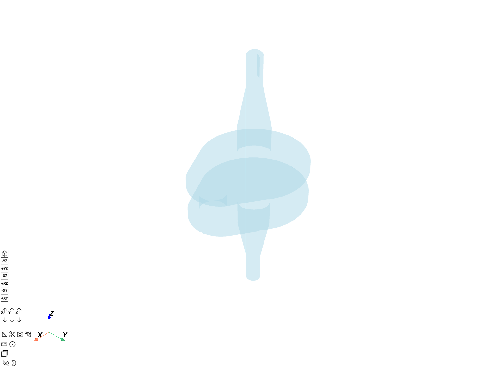
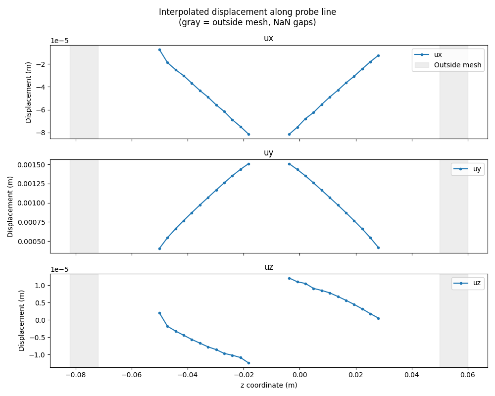
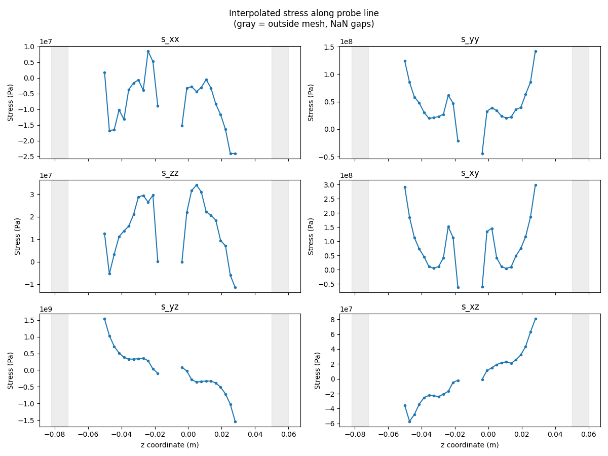
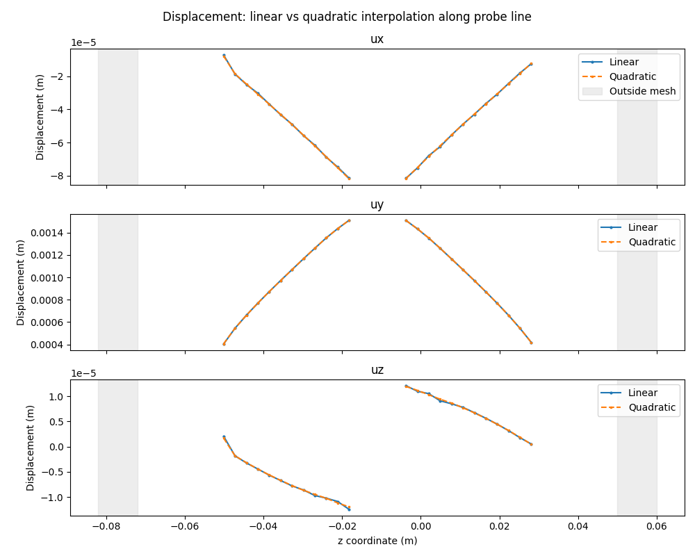

Note
Go to the end to download the full example code.
Reduced coordinates mapping#
Perform high-precision interpolation using a two-step element-local coordinate approach.
This tutorial demonstrates the find_reduced_coordinates / on_reduced_coordinates
workflow for mapping field values. In the first step,
find_reduced_coordinates
locates which element contains each target point and computes the element-local (reference)
coordinates. In the second step,
on_reduced_coordinates
uses those element-local coordinates to perform the interpolation.
Compared to direct Interpolation at coordinates mapping, this approach gives explicit access to element-local positions, enables efficient reuse for multiple field types, and supports higher-accuracy quadratic element interpolation.
Any target point outside the source mesh returns an empty value.
Import modules and load the model#
Import the required modules and load a result file.
# Import the ``ansys.dpf.core`` module
# Import NumPy for coordinate manipulation
import matplotlib.pyplot as plt
import numpy as np
from ansys.dpf import core as dpf
# Import the examples and operators modules
from ansys.dpf.core import examples, operators as ops
from ansys.dpf.core.geometry import Line
from ansys.dpf.core.plotter import DpfPlotter
Load model#
Download the crankshaft result file and create a
Model object.
result_file = examples.download_crankshaft()
model = dpf.Model(data_sources=result_file)
print(model)
DPF Model
------------------------------
Static analysis
Unit system: MKS: m, kg, N, s, V, A, degC
Physics Type: Mechanical
Available results:
- node_orientations: Nodal Node Euler Angles
- displacement: Nodal Displacement
- velocity: Nodal Velocity
- acceleration: Nodal Acceleration
- reaction_force: Nodal Reaction Force
- stress: ElementalNodal Stress
- elemental_volume: Elemental Volume
- stiffness_matrix_energy: Elemental Energy-stiffness matrix
- artificial_hourglass_energy: Elemental Hourglass Energy
- kinetic_energy: Elemental Kinetic Energy
- co_energy: Elemental co-energy
- incremental_energy: Elemental incremental energy
- thermal_dissipation_energy: Elemental thermal dissipation energy
- elastic_strain: ElementalNodal Strain
- elastic_strain_eqv: ElementalNodal Strain eqv
- element_orientations: ElementalNodal Element Euler Angles
- structural_temperature: ElementalNodal Structural temperature
------------------------------
DPF Meshed Region:
69762 nodes
39315 elements
Unit: m
With solid (3D) elements
------------------------------
DPF Time/Freq Support:
Number of sets: 3
Cumulative Time (s) LoadStep Substep
1 1.000000 1 1
2 2.000000 1 2
3 3.000000 1 3
Extract the mesh#
The mesh is needed by both find_reduced_coordinates and
on_reduced_coordinates.
Use bounding_box
to confirm the spatial extent of the model before choosing probe points.
mesh = model.metadata.meshed_region
bb_data = mesh.bounding_box.data[0] # [xmin, ymin, zmin, xmax, ymax, zmax]
print(
f"Bounding box: x=[{bb_data[0]:.4f}, {bb_data[3]:.4f}] "
f"y=[{bb_data[1]:.4f}, {bb_data[4]:.4f}] "
f"z=[{bb_data[2]:.4f}, {bb_data[5]:.4f}] m"
)
Bounding box: x=[-0.0250, 0.0350] y=[-0.0250, 0.0250] z=[-0.0720, 0.0500] m
Define target coordinates#
Create a Field that holds the probe
points at which field values should be interpolated.
A line of 8 equally-spaced points is built along the crankshaft z-axis. The range deliberately extends 10 mm beyond each end of the bounding box so that the first and last points fall outside the model—demonstrating how the reduced-coordinates workflow handles coordinates with no containing element.
n_pts = 50
z_pts = np.linspace(bb_data[2] - 0.01, bb_data[5] + 0.01, n_pts)
points = np.column_stack(
[np.full(n_pts, 0.005), np.zeros(n_pts), z_pts] # fixed x=5 mm, y=0
)
coords_field = dpf.fields_factory.field_from_array(arr=points)
print(
f"Probe line: {n_pts} points, z from {z_pts[0]:.4f} to {z_pts[-1]:.4f} m "
f"(bbox: [{bb_data[2]:.4f}, {bb_data[5]:.4f}])"
)
Probe line: 50 points, z from -0.0820 to 0.0600 m (bbox: [-0.0720, 0.0500])
Visualize probe line on the crankshaft#
Build a Line from the two endpoints of
the probe path and overlay it on a transparent crankshaft mesh.
probe_line = Line([points[0], points[-1]], n_points=n_pts)
pl = DpfPlotter()
pl.add_mesh(probe_line.mesh, color="red", line_width=4)
pl.add_mesh(mesh, style="surface", show_edges=False, opacity=0.3)
pl.show_figure(show_axes=True)

([], <pyvista.plotting.plotter.Plotter object at 0x00000256062B04D0>)
Step 1: Find reduced coordinates and element IDs#
Use find_reduced_coordinates to determine which element contains each
target point and the corresponding element-local (reference) coordinates.
find_op = ops.mapping.find_reduced_coordinates(
coordinates=coords_field,
mesh=mesh,
)
reduced_coords_fc = find_op.outputs.reduced_coordinates()
element_ids_sc = find_op.outputs.element_ids()
print("Reduced coordinates:")
print(reduced_coords_fc)
print("Element IDs:")
print(element_ids_sc)
# The scoping of the reduced-coordinates field records which input probe
# points were found inside an element; the rest fall outside the mesh.
found_ids = reduced_coords_fc[0].scoping.ids # 1-based input-point indices
in_mesh = np.zeros(n_pts, dtype=bool)
for eid in found_ids:
in_mesh[eid - 1] = True
print(f"{in_mesh.sum()} of {n_pts} probe points are inside the mesh")
x = z_pts # use z-coordinate as the x-axis
Reduced coordinates:
DPF Fields Container
with 1 field(s)
defined on labels: Unknown
with:
- field 0 {Unknown: 1} with Nodal location, 3 components and 24 entities.
Element IDs:
DPF Scopings Container
with 1 scoping(s)
defined on labels: Unknown
with:
- scoping 0 {Unknown: 1, } located on Elemental 24 entities.
24 of 50 probe points are inside the mesh
Step 2: Map displacement to reduced coordinates#
Use on_reduced_coordinates to interpolate displacement values at the
reduced coordinates found in step 1.
displacement_fc = model.results.displacement.eval()
mesh.plot(field_or_fields_container=displacement_fc, title="Crankshaft displacement")
mapping_op = ops.mapping.on_reduced_coordinates(
fields_container=displacement_fc,
reduced_coordinates=reduced_coords_fc,
element_ids=element_ids_sc,
mesh=mesh,
)
mapped_displacement_fc = mapping_op.eval()

Access mapped results#
Extract and display the interpolated displacement values.
mapped_field = mapped_displacement_fc[0]
mapped_data = mapped_field.data
element_ids = element_ids_sc[0]
# Build full arrays (NaN for outside-mesh points)
full_disp = np.full((n_pts, 3), np.nan)
for k, eid in enumerate(mapped_field.scoping.ids):
full_disp[eid - 1] = mapped_data[k]
# Line plot: displacement components along the probe line.
# Gaps appear where probe points fall outside the mesh.
components = ["ux", "uy", "uz"]
fig, axes = plt.subplots(3, 1, figsize=(10, 8), sharex=True)
for j, (ax, comp) in enumerate(zip(axes, components)):
y_vals = np.where(in_mesh, full_disp[:, j], np.nan)
ax.plot(x, y_vals, "o-", ms=3, label=comp)
ax.axvspan(
x[0], bb_data[2], color="lightgray", alpha=0.4, label="Outside mesh" if j == 0 else ""
)
ax.axvspan(bb_data[5], x[-1], color="lightgray", alpha=0.4)
ax.set_ylabel("Displacement (m)")
ax.set_title(comp)
ax.legend(loc="upper right")
axes[-1].set_xlabel("z coordinate (m)")
plt.suptitle("Interpolated displacement along probe line\n(gray = outside mesh, NaN gaps)")
plt.tight_layout()
plt.show()

Reuse reduced coordinates for stress#
Once the reduced coordinates and element IDs are available they can be reused to map additional result types efficiently without repeating the search step.
stress_fc = model.results.stress.eval()
mapped_stress_fc = ops.mapping.on_reduced_coordinates(
fields_container=stress_fc,
reduced_coordinates=reduced_coords_fc,
element_ids=element_ids_sc,
mesh=mesh,
).eval()
stress_data_out = mapped_stress_fc[0].data
full_stress = np.full((n_pts, 6), np.nan)
for k, eid in enumerate(mapped_stress_fc[0].scoping.ids):
full_stress[eid - 1] = stress_data_out[k]
# Line plot: stress components along the probe line.
comp_names = ["s_xx", "s_yy", "s_zz", "s_xy", "s_yz", "s_xz"]
fig, axes = plt.subplots(3, 2, figsize=(12, 9), sharex=True)
for j, (ax, comp) in enumerate(zip(axes.flat, comp_names)):
y_vals = np.where(in_mesh, full_stress[:, j], np.nan)
ax.plot(x, y_vals, "o-", ms=3, label=comp)
ax.axvspan(x[0], bb_data[2], color="lightgray", alpha=0.4)
ax.axvspan(bb_data[5], x[-1], color="lightgray", alpha=0.4)
ax.set_ylabel("Stress (Pa)")
ax.set_title(comp)
for ax in axes[-1]:
ax.set_xlabel("z coordinate (m)")
plt.suptitle("Interpolated stress along probe line\n(gray = outside mesh, NaN gaps)")
plt.tight_layout()
plt.show()

Use quadratic elements for higher precision#
For meshes with quadratic elements, enable the use_quadratic_elements option
in both operators for higher-order interpolation accuracy.
find_op_quad = ops.mapping.find_reduced_coordinates(
coordinates=coords_field,
mesh=mesh,
use_quadratic_elements=True,
)
reduced_coords_quad_fc = find_op_quad.outputs.reduced_coordinates()
element_ids_quad_sc = find_op_quad.outputs.element_ids()
mapped_disp_quad_fc = ops.mapping.on_reduced_coordinates(
fields_container=displacement_fc,
reduced_coordinates=reduced_coords_quad_fc,
element_ids=element_ids_quad_sc,
mesh=mesh,
use_quadratic_elements=True,
).eval()
quad_data_out = mapped_disp_quad_fc[0].data
full_quad = np.full((n_pts, 3), np.nan)
for k, eid in enumerate(mapped_disp_quad_fc[0].scoping.ids):
full_quad[eid - 1] = quad_data_out[k]
# Line plot comparison: linear vs quadratic interpolation
fig, axes = plt.subplots(3, 1, figsize=(10, 8), sharex=True)
for j, (ax, comp) in enumerate(zip(axes, components)):
y_lin = np.where(in_mesh, full_disp[:, j], np.nan)
y_quad = np.where(in_mesh, full_quad[:, j], np.nan)
ax.plot(x, y_lin, "o-", ms=2, label="Linear")
ax.plot(x, y_quad, "s--", ms=2, label="Quadratic")
ax.axvspan(
x[0], bb_data[2], color="lightgray", alpha=0.4, label="Outside mesh" if j == 0 else ""
)
ax.axvspan(bb_data[5], x[-1], color="lightgray", alpha=0.4)
ax.set_ylabel("Displacement (m)")
ax.set_title(comp)
ax.legend(loc="upper right")
axes[-1].set_xlabel("z coordinate (m)")
plt.suptitle("Displacement: linear vs quadratic interpolation along probe line")
plt.tight_layout()
plt.show()

Total running time of the script: (0 minutes 3.999 seconds)